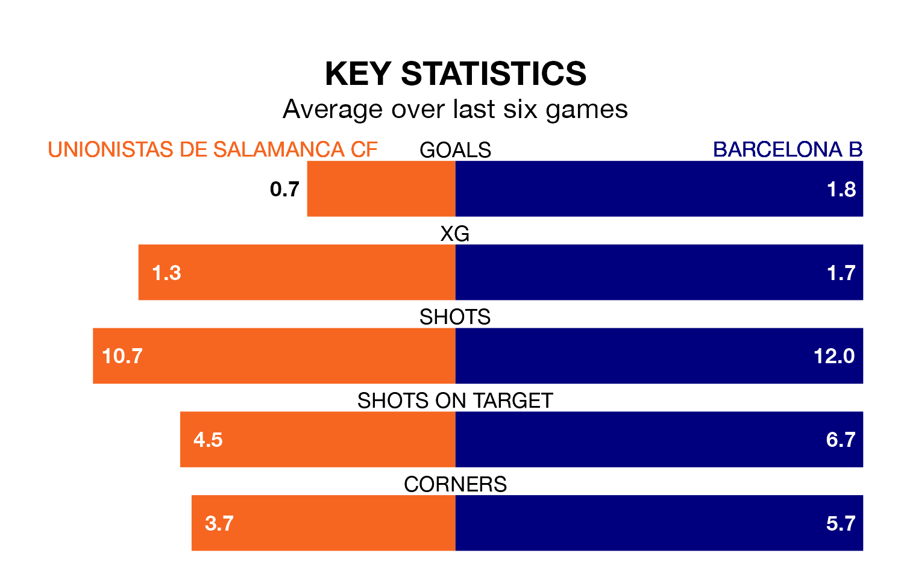

Barcelona B face Unionistas de Salamanca CF on Sunday seeking to protect their formidable unbeaten run in Primera Division RFEF Group 1.
Barcelona B are unbeaten in 12, with nine wins and three draws, ahead of the 6pm kick-off.
They face an Unionistas de Salamanca team who have won four and drawn five over the same number of games.
With 49 goals in 31 games so far this season, Barcelona B are the league's third-highest scorers with 1.6 goals per game. And they are conceding at an average rate, letting in 32 goals at a rate of 1.0 per game.
Unionistas de Salamanca, meanwhile, are below average scorers, with 0.8 goals per game, compared to a league average of 1.0. They have also conceded 0.8 goals per game.
In Pau Victor, the away team have the league's sharpest shooter so far this season. He has notched 12 goals in 21 appearances.
His goal rate of one every 157 minutes is quicker than that of Borislav Ivaylov Stankov, the hosts' top scorer with a goal every 228 minutes, and a total of four goals in 20 games.
Barcelona B are second in the table after 31 games, of which they have won 17 and drawn seven, earning 58 points.
Unionistas de Salamanca are six places behind Barcelona B in eighth, with 10 wins and 12 draws putting them on 42 points.
Unionistas de Salamanca's last match was on April 7, a 1-0 loss against Deportivo La Coruña.
Barcelona B drew 1-1 with Arenteiro last time out, also on April 7, with Alexis Olmedo Vila on the scoresheet.
Updated: 11:20 (UTC), 09/04/24